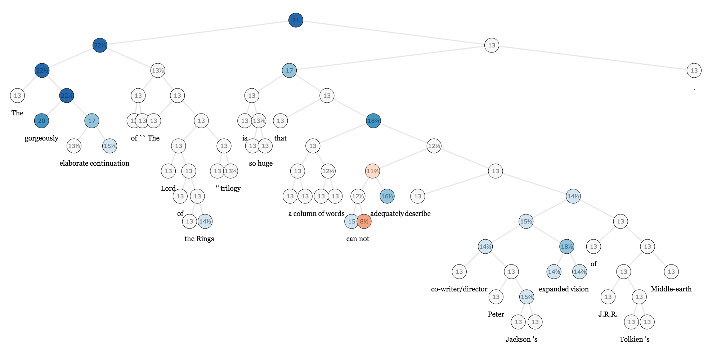

On Machine Learning and Programming Languages
Any sufficiently complicated machine learning system contains an ad-hoc, informally-specified, bug-ridden, slow implementation of half of a programming language.1
As programming languages (PL) people, we have watched with great interest as machine learning (ML) has exploded – and with it, the complexity of ML models and the frameworks people are using to build them. State-of-the-art models are increasingly programs, with support for programming constructs like loops and recursion, and this brings out many interesting issues in the tools we use to create them – that is, programming languages.
While machine learning does not yet have a dedicated language, several efforts are effectively creating hidden new languages underneath a Python API (like TensorFlow) while others are reusing Python as a modelling language (like PyTorch). We’d like to ask – are new ML-tailored languages required, and if so, why? More importantly, what might the ideal ML language of the future look like?
Pig Latin, and Other Hidden Languages
TensorFlow (TF) and its ilk2 are already programming languages, albeit limited ones. This may seem surprising given that one uses Python to program TF. However, consider that TF requires you to write Python code to build an expression tree in its internal language, which it then evaluates.
In fact, you can program in “lazy” TensorFlow style in any language. Consider the following JavaScript code, which implements a trivial function (add) in this style:
function add(a,b) {
return `${a}+${b}`;
}
x = 1; y = 2
z = add('x', 'y') // 'x+y'
eval(z) // 3
x = 4
eval(z) // 6
Here we are metaprogramming – writing code that writes code. In this case both the meta-language and the target language are the same (JavaScript) but they could just as well be different languages (as in the C preprocessor for the C language), or we can use a data structure (an AST) instead of a string – the principle is the same. In TensorFlow, Python serves as a meta-language for writing programs in TF’s graph-based language.3 If you’re not convinced, consider that TensorFlow’s graph even supports constructs like variable scoping and control flow – but rather than using Python syntax, you manipulate these constructs through an API.
TensorFlow and similar tools present themselves as “just libraries”, but they are extremely unusual ones. Most libraries provide a simple set of functions and data structures, not an entirely new programming system and runtime. Why is such a complex approach necessary?
Why create a new language?
The core reason for building new languages is simple: ML research has extremely high computational demands, and simplifying the modelling language makes it easier to add domain-specific optimisations and features. Training models requires excellent hardware support, good numerics, low interpreter overhead and multiple kinds of parallelism. Where general-purpose languages like Python struggle to provide these features, TensorFlow can handle them seamlessly.
There’s a snag, though. These impressive optimisations rely on simplifying assumptions (ML models won’t be recursive, or need custom gradients, right?), which make it easier to apply optimisations or deploy to small devices. Unfortunately for engineers, model complexity has increased and researchers thoroughly enjoy violating these assumptions. Models now demand conditional branching (ok, easy enough to hack in), loops for recurrence (less easy but possible), and even recursion over trees (virtually impossible to deal with). In many areas of ML, including neural networks and probabilistic programming, models are becoming increasingly like programs, including ones that reason about other programs (e.g. program generators and interpreters), and with non-differentiable components like Monte Carlo Tree Search. It’s enormously challenging to build runtimes that provide complete flexibility while achieving top performance, but increasingly the most powerful models and groundbreaking results need both.

Another practical downside of this approach, at least in its current incarnations, is the need for meta-programming of the kind discussed above. Building and evaluating expression trees imposes significant additional burdens on both the programmer and the compiler. It becomes tricky to reason about because the code now has two execution times, each with different language semantics, and things like step-through debugging are much harder. This could be resolved by creating a syntactic language for the new runtime, but this means no less than creating a full new programming language. Is this worthwhile when we have popular numerical languages already?
Can we just use Python?
As ML models began to need the full power of a programming language, Chainer and others pioneered a “define-by-run” approach wherein a Python program is itself the model, using runtime automatic differentiation (AD) for derivatives. This is fantastic from a usability standpoint: If you want a recursive model that operates over trees, simply write that down, and let the AD do its magic! The difference in feel is hard to overstate, and a frictionless approach to playing with novel ideas is invaluable to research.
However, getting Python to scale to ML’s heavy computational demands is far harder than you might expect. A huge amount of work goes into replicating optimisations that fast languages get for free, and the PL boneyard is full of high-profile yet failed efforts to make Python faster. Python’s semantics also make it fundamentally difficult to provide model-level parallelism or compile models for small devices.
Efforts like Gluon for MXNet are finding ways to get the best of both, at least to some extent. The idea is to combine basic dynamic AD with code-tracing approaches that produce “static sub-graphs” that can be optimised. This is unfortunately something of a mashing together of disparate implementations and APIs. It’s also limited; MXNet uses its graph not just for kernel-level optimisations but also for high-level graph scheduling, such as splitting a model across multiple GPUs. It’s unclear how these hybrids will handle this, other than by adding another new API for graph containers whose nodes can be dynamic computations.
What might a tailor-made ML language look like?
There are few domains as demanding about language-level design issues as machine learning. But it’s not unprecedented, and in areas like formal reasoning and verification or cluster computing, new, tailor-made languages have proved an effective solution. Similarly, we expect to see new or existing languages customised for the kind of numerical, differentiable, parallelisable and even probabilistic computations needed in ML.
An obvious current challenge for ML languages is achieving generality alongside performance, and the early hybrid approaches will need much more development. We expect that future ML runtimes will need to support arbitrary mixing of approaches (computational graphs that are static within dynamic within static …) and will need to get better at compiling dynamic code for deployment. Ideally, there will only be single, flexible “graph format” (or AST). The AST should have a syntax and statically describe dynamic behaviour (e.g. with a written for loop) – in other words, it should look a lot more like a standard programming language.
Programmable semantics would open up new levels of flexibility, and could be provided by a feature similar to macros. This would allow features like multi-GPU training to be built on top of the core system, by specifying where the code should have pure dataflow semantics (as opposed to standard imperative semantics, which are more flexible but may include side-effects that are unsafe to optimise). It could also allow the kinds of program manipulation needed by probabilistic programming languages, or the vectorisation (batching) passes usually implemented by hand in NLP models.
As well as the PL community, ML engineers should pay close attention to the traditional Automatic Differentiation (AD) community. ML languages can take inspiration from pioneering work on languages designed for truly first-class derivative support. Such languages can easily mix symbolic with runtime techniques (helping with the tradeoffs mentioned above), mix forward and reverse mode AD (for improved performance and memory usage), and differentiate GPU kernels – all with no loss in performance.
ML research will increasingly need more powerful type systems, user-defined types and more means for extension. Gone are the days when it was enough to hard-code support for strided arrays on NVIDIA GPUs; cutting-edge techniques like sparse machine learning, new hardware like TPUs, Nervana and FPGAs, and diverse deployment targets like ARM chips or the iPhone’s CoreML chip all call for greater levels of flexibility. Large-scale refactoring of core C++ code for each new development will not scale.
Consider a world where adding new hardware support – or new kinds of data representations – could easily be accomplished by a user in high-level code, without changes to the original system. Here we expect ML systems to take inspiration from existing numerical computing languages, which can already handle these tasks with ease.
Type systems can also have safety benefits, but current ones are not suited to array-heavy code where array dimensions are meaningful (for example, spatial vs channel vs batch dimensions in images). These distinctions are left to pure convention, and hairy dimension-permuting code has no protection from mistakes, leaving much room for more array-aware type systems. We expect the trend towards dynamic typing to continue,4 mainly due to practitioners’ preference for interactivity and scripting, but hope to see further innovations like CNTK’s optionally dynamic dimensions.
ML engineers are increasingly interested in traditional software engineering problems like the maintenance and extension of production systems. The ML programming model makes it harder to create abstraction barriers and interfaces between components, and re-training of a model can easily break backwards compatibility. ML languages will likely be able to incorporate solutions to these problems just as regular languages do, but this remains an open design problem.

A downside to any new language is that it require a new library ecosystem, as only code written for the new runtime benefits from it. For example, rather than reusing the Python ecosystem, the TensorFlow developers need to rewrite libraries for tasks like image processing and file IO in the graph language, throwing out the vast effort behind projects like SciPy. This may well be the only way forward, but ML practitioners should not split from the wider numerical and HPC community. An ideal ML ecosystem is an ideal numerical one, and vice versa, and collaboration between these communities will multiply everyone’s efforts.
We expect to see these developments coming from several angles. Graph IRs and formats like XLA, ONNX and NNVM are becoming ever more sophisticated and will likely take more inspiration from traditional language design,5 perhaps even adding surface syntax to become fully-fledged programming languages. TensorFlow’s XLA has started a push towards special-purpose compiler stacks that now includes TVM, DLVM, myelin, and other ongoing work. Meanwhile, projects like the PyTorch JIT, Gluon and Tangent are efforts to make Python itself a better modelling language, in spite of the significant challenges. Having just argued that ML is a numerical programming languages problem, we in the Julia community feel that it is an excellent substrate for experimenting with these kinds of language-level issues, and will continue to push the boundaries with projects like Knet, Flux, Cassette, CUDAnative, DataFlow.jl, and more.
Conclusion: An Inference about Machine Learning
Machine learning models have become extremely general information-processing systems that build ever higher-level and more complex abstractions; recurrence, recursion, higher-order models, even stack machines and language interpreters, all implemented as compositions of basic components. ML is a new programming paradigm, albeit a strange one that’s heavily numerical, differentiable and parallel. And as in any engineering field, the tooling available will have a profound impact on the scope and quality of future work.
All this suggests that designers of ML systems have a momentous challenge ahead of them. But while that’s true, there’s some good news: The very same problems have been deeply explored, if not already solved, by language researchers over the last few decades! To really take this new field to its full potential, the machine learning and programming languages communities will have to combine forces, and the real challenge is to integrating the disparate expertise of these two groups.
Can we build systems that treat numerics, derivatives and parallelism as first-class features, without sacrificing traditional programming ideas and wisdom? This is the foundational question which languages over the coming decade will have to answer.
- After Philip Greenspun [return]
- We use TensorFlow for example, but could substitute other “define-before-run” frameworks like CNTK or MXNet. [return]
- TensorFlow’s graph is effectively a dataflow-based AST (Abstract Syntax Tree). [return]
- Though we note that, internally, current systems span the gamut from fully dynamic (PyTorch and its ATen backend) to unusually static (TensorFlow’s XLA and MXNet, where all dimensions are known before the graph is run). [return]
- Google Brain’s increasing hiring of programming languages experts, such as Chris Lattner, is an interesting development on this point. [return]